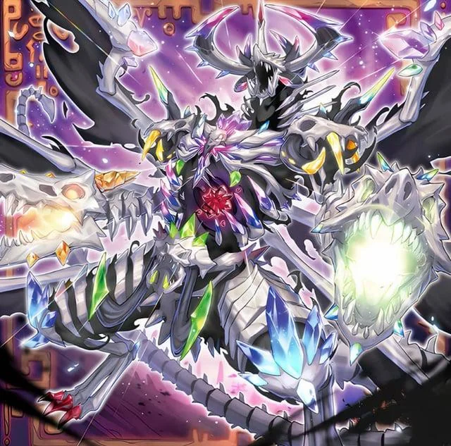

Mementotlan Engine
The typical Mementotlan decklist consists of the following
- 3 Mementotlan Angwitch
- 2-3 Mementotlan Darkblade
- 3 Mementotlan Tatsunootoshigo
- 1 Mementotlan Combined Creation
- 1 Mementotlan-Horned Dragon
- 1 Mementotlan Mace
- 1-2 Mementotlan Goblin
- 1 Mementotlan Ghattic
- 1 Mementotlan Shleepy
- 1 Mementotlan Akihiron
- 2 Mementomictlan Tecuhtlica - Creation King [extra deck]
- 1 Mementotlan Twin Dragon [extra deck]
- 3 Mementotlan Fusion
- 3 Mementotlan Bone Party
- 1 Mementomictlan
This in total accounts for ~23 of your minimum 40 main deck slots leaving 17 slots for non-engine and only 3 of your maximum 15 extra deck slots.
Non Engine Staples
The amount of non Engine "staple" cards you want to play depends on a few factors such as; how much more than 40 cards you want to play, the size of your secondary engine (if any), and the going second vs going first split you want to make. That being said there are some staples you are going to want to play regardless the top three being.
- 2 Maxx "C"
- 3 Ash Blossom & Joyous Spring
- 2 Called By The Grave
Maxx "C" is the current strongest card in the Master Duels format so playing the maxximum (2) copies of it and 5 cards that can stop a Maxx "C" or otherwise interrupt your opponent is a wise choice.
Side Engines
While it is possible to play pure Mementotlan, most decks opt to play a secondary package of cards to supplement the main engine and make the most of the extra deck. I will detail some of the most popular side engines bellow
Fiendsmith Engine
Fiendsmith is a popular engine in almost every deck that doesn't lock itself and for good reason. The fiendsmith package requires only 5 main deck slots and 5-7 extra deck slots. It is able to turn 2 pieces of extra materials (or excess monsters) into an untargetable boss monster that negates and outs. Its flexible, able to play through most interruptions, it recycles its self if the game goes long and can work as a backup plan in case your main engine gets stopped before it can get filling the graveyard. The biggest weakness of fiendsmith are that it adds 2 bricks (or cards you dont want in your oppening hand) to the Deck and the presence of common antifiendsmith tech cards in the metagame due to its previlance and power.
Super polymerization
While not an engine per say, Super polymerization takes up a large enough Amount of extra deck slots that it can be classified as one, 3 copies of super polymerization main deck and 3-5 targets in the extra deck. Super polymerization is a board breaker allowing you to get around untargetable boss monsters while going second, and going first, is not unusable as you. can use it to fusion summon your extenders. My choice of side engine. Its main weakness is the large amount of extra deck space it takes essentially religating it to being the only side engine.
Berfomet
A powerful but difficult to play engine, using only 1 main deck slot and 4 extra deck slots this play lets you turn 3 materials into an S;P Little Knight and a Diabellze the Original Sinkeeper. Half of this package fits into the fiendsmith package perfectly, allowing for easy synergy there but it also can be played alone, by getting out Diabellze you can use the many destruction effects of Mementotlan to essentially negate spells, covering a major weakness of Mementotlan. This combo is difficult to pull off in a timely manner and requires a ton of attention and rules knowledge but is arguable the strongest way to play fiendsmith.
For successful Memento decks, check out the Masterduels Meta Website